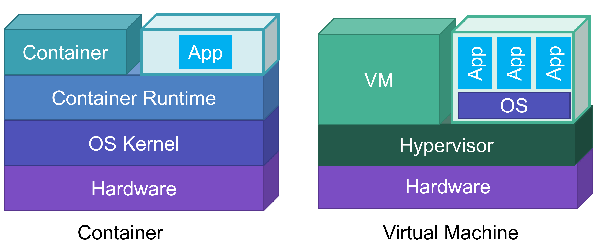

コンテナ勉強会
最所研究室内で行ったコンテナ勉強会の資料です． この資料は GitHub で公開しています．
目的
- コンテナ(Container, Lightweight Virtualization)の理論を学ぶ
- コンテナとVMの違いを知り, ワークロードによって使い分けられるようになる
- Dockerの使用法を学び，今後アプリケーションの開発の効率を上げる
対象
以下のような学生を対象とする
- Linuxを使用したことがある
- OSやTCP/IPに関する講義レベルの知識がある
概要
- コンテナ型仮想化概論
- Docker入門
- Container Hacks
コンテナ勉強会 概論編
仮想マシン
仮想マシン(VM)はハイパーバイザによって提供される仮想的なハードウェア上で複数の OS を同時に実行できる技術である． 1つの物理マシン上に複数のVMを集約することで計算機資源を柔軟に管理することが可能である． Linux では KVM (Kernel-based Virtual Machine) などを利用して仮想マシンを構築することができる．
コンテナ型仮想化
コンテナ型仮想化とは，アプリケーションの実行環境を作成する仮想化技術の1つである． VM と異なる点は仮想環境内に OS カーネルが存在しない点である． これにより仮想環境の実行に OS の起動が必要ないため，高速な起動を実現できる． VMが1つのハードウェアを多重化して複数のハードウェアに見せかけたりするのと比べ， コンテナはOSを仮想化し，あたかも異なる複数のOSのようなものが実行されているように見える． コンテナはコンテナを提供するホストOSカーネルによって管理される． ホストOS側からはコンテナは単なるプロセスとして見える． しかしコンテナ内からは，ホストから様々なリソースを隔離されている．
注意: コンテナ型仮想化では，ホストのOSカーネルを使ってコンテナを作成する．そのため，ホストOSと異なるOSのコンテナを作成することはできない．LinuxではLinux, WindowsではWindowsのコンテナのみ作成できる．
コンテナは様々な用途で利用され，Webサービス等だけではなく組み込み機器，Machine Learningなどでも利用されることが増えてきた． 誤解を恐れないでいうと，コンテナが向いていないワークロードをベアメタルかVMを用いて運用するという方向になりつつある．
コンテナが向いていない要件
- カーネルモジュールなどに大きく影響するシステム
- パブリッククラウドなどにおける不特定多数が利用するマルチテナンシーな環境
- レスポンスタイムがシビアなシステム(仮想NICなどを経由することが多くなるため)
コンテナ型仮想化技術はOSカーネルをホストと共有するため，OSカーネルやコンテナ実行環境の脆弱性に気をつける必要がある．

コンテナの歴史
コンテナの起源は1970年代に登場した UNIX のchroot システムコールに遡る．
chroot システムコールはシステムのルートディレクトリを変更するシステムコールである．
これにより簡易的な隔離環境を作ることができる．
HTTP Serverなどで用いられ，ディレクトリトラバーサルなどの対策に使われた．
2000年には FreeBSD jail が生まれ，chroot以外にも様々な隔離機能が搭載され，この後に生まれてくるコンテナ型仮想化に踏襲された．
2006年頃，Linux 2.6 にて namespaces (後述) という機能が実装された．
この機能を用いて登場したのが LXC や Docker といった現代のコンテナ型仮想化ソフトウェアである．
Linuxコンテナを構成する機能
Linuxにおけるポピュラーなコンテナは以下の機能によって実装されている．
Namespace(名前空間)
namespaces(7) はLinuxカーネルのリソースを分離するための機構である．
unshare, clone, clone3, setns などのシステムコールで namespace を分離することができる．
Namespaceの種類
PID Namespace: Process IDを分離することができる．これにより，ホストのOSのプロセスの状態と関係なくコンテナ内のPIDは1からスタートする．psコマンドなどの結果が変わる．Network Namespace: ネットワークインタフェースの情報をホストから分離する．コンテナ内からホストのNICの情報をみることができなくなる．ホストとの疎通もできなくなるため，仮想Ethernetなどの構築が必要UTS Namespace: UTSを分離する． これによりコンテナにホストOSと異なるホスト名をつけることができる．Mount Namespace: マウントしているファイルを分離することができる．User Namespace: UID, GID, Capability を分離する．コンテナ外の一般ユーザをコンテナ内の root ユーザにマッピングすることができるようになる．Cgroup Namespace: cgroups(7) の root ディレクトリを分離する．Time Namespace: コンテナの中のタイムゾーンをホストと異なるものが使用できる
Cgroups (Control groups)
CgroupはLinuxカーネルのリソースの使用を制限する機能である． プロセス群のCPU, RAM, Disk IO, Network IOなどのハードウェア資源の使用量やプロセスの生成数などを制限することができる． それらを管理するシステムをCgroupコントローラと呼ぶ． Cgroup コントローラは以下のような種類がある．
CPUMemoryIODeviceRDMAMisc
Note: Cgroupにはv1, v2が存在し，それぞれディレクトリの階層が異なる．Linuxカーネルのバージョンや設定に注意
コンテナの実装
実装1. Bashで作るコンテナ
mkdir rootfs
docker export $(docker create ubuntu:20.04) | tar -C rootfs -xvf -
unshare --mount --uts --net --pid --user --fork /bin/bash
chroot rootfs /bin/bash
mount -t proc proc /proc
psコマンドでプロセスが隔離されていることを確認しよう
実装2. C言語で作るコンテナ
コンテナのミニマム実装の例: c2
#define _GNU_SOURCE
#include <error.h>
#include <fcntl.h>
#include <sched.h>
#include <stdio.h>
#include <stdlib.h>
#include <sys/mount.h>
#include <sys/stat.h>
#include <sys/types.h>
#include <sys/wait.h>
#include <unistd.h>
// new_uidmap -- HostのUIDをコンテナのUID 0(root user)に割り当てる
void new_uidmap(uid_t uid) {
int fd = open("/proc/self/uid_map", O_WRONLY);
if (fd < 0) {
perror("open /proc/self/uid_map");
exit(EXIT_FAILURE);
}
char uid_map[255];
sprintf(uid_map, "0 %d 1", (int)uid);
int ret = write(fd, uid_map, sizeof(uid_map));
if (ret != sizeof(uid_map)) {
perror("write /proc/self/uid_map");
exit(EXIT_FAILURE);
}
close(fd);
}
// new_gidmap -- HostのGIDをコンテナのGID 0(root group)に割り当てる
void new_gidmap(gid_t gid) {
int fd = open("/proc/self/setgroups", O_WRONLY);
if (fd < 0) {
perror("open /proc/self/setgroups");
exit(EXIT_FAILURE);
}
int ret = write(fd, "deny", sizeof("deny"));
if (ret != sizeof("deny")) {
perror("write /proc/self/setgroups");
exit(EXIT_FAILURE);
}
close(fd);
fd = open("/proc/self/gid_map", O_WRONLY);
if (fd < 0) {
perror("open /proc/self/gid_map");
exit(EXIT_FAILURE);
}
char gid_map[255];
sprintf(gid_map, "0 %d 1", (int)gid);
ret = write(fd, gid_map, sizeof(gid_map));
if (ret != sizeof(gid_map)) {
perror("write /proc/self/gid_map");
exit(EXIT_FAILURE);
}
close(fd);
}
int main(void) {
const uid_t host_uid = getuid();
const gid_t host_gid = getgid();
// PID, UTS, Network, IPC, User, Mountを分離する
const int clone_flags = CLONE_NEWPID | CLONE_NEWUTS | CLONE_NEWNET |
CLONE_NEWIPC | CLONE_NEWUSER | CLONE_NEWNS;
// Hostと別のLinux Namespaceを作成する
int err = unshare(clone_flags);
if (err < 0) {
perror("unshare");
exit(EXIT_FAILURE);
}
// HostのUIDをコンテナのUID 0に割り当てる
new_uidmap(host_uid);
// HostのGIDをコンテナのGID 0に割り当てる
new_gidmap(host_gid);
// 子プロセスの作成
const pid_t pid = fork();
if (pid < 0) {
perror("fork");
exit(EXIT_FAILURE);
} else if (pid == 0) {
// Child Process
int ret = chroot("rootfs");
if (ret < 0) {
perror("chroot");
exit(EXIT_FAILURE);
}
chdir("/");
ret = mount("proc", "/proc", "proc", 0, NULL);
if (ret < 0) {
perror("mount procfs");
exit(EXIT_FAILURE);
}
char *const child_argv[2] = {"/bin/bash", NULL};
char *const env[] = {};
execve(child_argv[0], child_argv, env);
perror("execve");
exit(EXIT_FAILURE);
}
// Parent Process
int status;
const pid_t ret = waitpid(pid, &status, 0);
if (ret < 0) {
perror("waitpid");
exit(EXIT_FAILURE);
}
// プロセスが終了している場合
if (WIFEXITED(status)) {
printf("child exit code: %d\n", WEXITSTATUS(status));
} else {
printf("child status: %04d\n", status);
}
}
その他の実装例
- jail
- lxc/lxd
- docker
- podman
コンテナの分類
アプリケーションコンテナ
DockerやCRI-Oなどで用いられるコンテナはアプリケーションコンテナと呼ばれる． アプリケーションコンテナは単一関心事の原則(Single Concern Princile)という考え方を採用しているコンテナである． シンプルに表現すると，1つのコンテナ内で実行するアプリケーションを1つに限定するという原則である． これにより，コンテナ内のアプリケーションの依存関係をシンプルにし，スケールが容易になるといったものである． LAMP(Linux, Apache, MySQL, PHP)でいうと，Apache(+ PHP)とMySQLを別々のコンテナとして利用し，リクエストの増加に応じてApacheのコンテナのみをスケールすることができる．
システムコンテナ
LXC(LXD), OpenVZはシステムコンテナと呼ばれるコンテナ環境である． システムコンテナとは，アプリケーションコンテナと異なり，複数のアプリケーションが動作し，実際のLinux OSと同様に動作するものである． systemdなどのinit processが動作し，複数のデーモンプロセスを動かすことが可能だ． 1つのコンテナのイメージサイズは大きいが，VMなどの構成をそのまま移行することも比較的容易である． LAMP(Linux, Apache, MySQL, PHP)を1つのコンテナで動かすようなもの．

演習問題
- コンテナ型仮想化のメリット・デメリットを述べなさい
- コンテナとVMの違いについて答えなさい
- システムコンテナとアプリケーションコンテナの違いについて述べなさい
Docker 入門
Agenda
話すこと
- Docker自体の説明
- Dockerの基本的な使い方
話さないこと
- Dockerの環境構築
- Docker Desktopなどの使い方
Dockerとは
Dockerとはコンテナ型仮想化ソフトウェアである． Dockerは，コンテナの起動(Run)，コンテナイメージの作成(Build)，コンテナイメージの公開(Share)などの機能を持つ． 現在最も普及しているコンテナ型仮想化ソフトウェアであり，Amazon Web Service(AWS)のElastic Container Service(ECS)のようなコンテナプラットフォームや，開発者の開発環境など広く使われている． Dockerはコンテナの中でもアプリケーションコンテナを扱う． アプリケーションコンテナのことをDocker, Inc. は「A standardized unit of software (ソフトウェアの標準化された単位)」だと表現している． https://www.docker.com/resources/what-container
これは，コンテナとはコードと依存関係をパッケージ化したスタンドアロンなコンピューティング環境であり，高い可搬性(Portability)を持つということを指す． 要はDockerが入っているLinuxディストリビューションであればCentOSでもUbuntuでも同じコンテナイメージを用いてシステムを構築することができるというものである．
Dockerのアーキテクチャ

Dockerは大きく分けて3つの要素から構成される．
dockerコマンド: Dockerの操作を行うためのCLI- Dockerd: Dockerの操作を行うためのAPIを提供する
- Container Runtime: コンテナの実行や状態管理を行うシステム
containerd: 高レベルコンテナランタイム, CRI Runtimerunc: 低レベルコンテナランタイム, OCI Runtime
Dockerでいろんなコンテナを実行する
実際にdocker container run コマンドを使用してコンテナを実行する．
今回実行するコンテナイメージはすべて DockerHub のものを用いる．
- Ubuntu
- Nginx
- Jupyter
サンプルファイルなどのダウンロード
git clone https://github.com/guni1192/container-workshop.git
cd container-workshop
演習環境のVMを構築
vagrant up
vagrant ssh
cd samples/
フォルダ構成は以下のようになっている
samples
├── docker
│ ├── go-webapp
│ │ ├── Dockerfile
│ │ ├── go.mod
│ │ ├── go.sum
│ │ ├── main.go
│ │ └── Makefile
│ └── jupyter
│ └── sample.ipynb
├── kubernetes
│ └── samples
└── README.md
実行環境
- OS: Fedora 35
- Kernel: Linux x86-64 5.14
[vagrant@fedora ~]$ docker version
Client: Docker Engine - Community
Version: 20.10.10
API version: 1.41
Go version: go1.16.9
Git commit: b485636
Built: Mon Oct 25 07:43:46 2021
OS/Arch: linux/amd64
Context: default
Experimental: true
Server: Docker Engine - Community
Engine:
Version: 20.10.10
API version: 1.41 (minimum version 1.12)
Go version: go1.16.9
Git commit: e2f740d
Built: Mon Oct 25 07:41:31 2021
OS/Arch: linux/amd64
Experimental: false
containerd:
Version: 1.4.11
GitCommit: 5b46e404f6b9f661a205e28d59c982d3634148f8
runc:
Version: 1.0.2
GitCommit: v1.0.2-0-g52b36a2
docker-init:
Version: 0.19.0
GitCommit: de40ad0
Ubuntuの実行
Ubuntuのイメージを使用したコンテナでbashを起動する
↓ コンテナイメージ
docker container run -it ubuntu:20.04 bash
↑ コンテナ内で実行するコマンド
今回はbashのような対話シェルを実行するため，以下のようなオプションが必要になる．
-i, --interactive Keep STDIN open even if not attached
-t, --tty Allocate a pseudo-TTY
演習: コンテナの内部と外部の比較
以下のコマンドをコンテナ内とコンテナ外で実行して比べてみよう
uname -r: カーネルのバージョンを表示cat /etc/*-release: ディストリビューションの情報を表示ps auxf: 実行中のプロセスの表示hostname: hostnameの表示ip addr: ネットワークデバイスとIPの表示(事前にapt update -y && apt install -y iproute2でipコマンドをインストールする必要がある)
Nginxの実行
Nginx(エンジンエックス)は静的ファイルを高速にサーブできるHTTPサーバプログラム．
docker container run --name nginx -d -p 8080:80 nginx:1.19.9
↑ コンテナの80番ポートをホストの8080番ポートにフォワード
今回はバックグラウンドでNginxを動かすために-dを使用した．
また，-p でコンテナの80番ポートをホストの8080番にフォワードした．
--name string Assign a name to the container
-d, --detach Run container in background and print container ID
-p, --publish list Publish a container's port(s) to the host
演習: コンテナの外からcurlを用いて，Nginxにリクエストを送信する
curl http://localhost:8080でWelcome to nginx!というレスポンスが返ってくると成功．docker psコマンドで現在動いているコンテナのIDを確認する．docker logs -f CONTIANER_IDでコンテナのアクセスログを表示する．- もう一度
curl http://localhost:8080でNginxにリクエストを送信し，アクセスログが表示されることを確認する．
終わったらコンテナを止める
docker container stop nginx
Jupyter Labの実行
Jupyter LabはJupyter NotebookのIDEのようなもの． Webブラウザで実行できる．
cd docker/jupyter
docker container run --name jupyterlab --rm -p 8888:8888 \
-e JUPYTER_ENABLE_LAB=yes \
-v "$PWD":/home/jovyan/work \
jupyter/datascience-notebook
--rm Automatically remove the container when it exits
-v, --volume list Bind mount a volume
-e, --env list Set environment variables
アクセスできることを確認できたら止める
docker container stop jupyterlab
Webアプリケーションをコンテナ化する
Goで書いたシンプルなWebアプリケーションをコンテナ化して実行する．
コンテナイメージの作成には docker image build(docker build) コマンドを使用する．
package main
import (
"net/http"
"github.com/labstack/echo/v4"
"github.com/labstack/echo/v4/middleware"
)
func main() {
e := echo.New()
e.Use(middleware.Logger())
e.Use(middleware.Recover())
e.GET("/", hello)
e.Logger.Fatal(e.Start(":1323"))
}
func hello(c echo.Context) error {
return c.String(http.StatusOK, "Hello, World!")
}
各行の先頭に書いてあるのはDockerfile特有の命令である． それぞれの命令の詳細は公式ドキュメント[2]を読むことを勧める．
FROM golang:1.17-bullseye
WORKDIR /src
RUN apt-get update && \
apt-get install make && \
apt-get clean && \
rm -rf /var/lib/apt/lists/*
COPY go.mod go.mod
COPY go.sum go.sum
RUN go mod download
COPY . /src
RUN make build
ENTRYPOINT ["/src/bin/go-webapp"]
FROM golang:1.17-buster: ベースとなるコンテナイメージである．Golangが入ったDebian 10上に構築する．WORKDIR /src: /srcをカレントワーキングディレクトリに指定． なければディレクトリを作るCOPY go.mod go.mod: ローカルのgo.modをコンテナ内の/src/go.modにコピーする．RUN go mod downloadgo.modやgo.sumに書いてあるpackageをダウンロードするコマンドを実行するCOPY . /src: カレントディレクトリのすべてを/srcにコピーするRUN make build: makeでgolangのバイナリをビルドするENTRYPOINT ["go-webapp"]:コンテナを実行時にどのコマンドを実行するか定義する
docker image build -f Dockerfile.singlestage -t go-webapp:singlestage .
演習: 作ったコンテナイメージを実行する
docker container run (docker run) コマンドを使ってコンテナを実行する．
docker container run -d --name go-webapp -p 1323:1323 go-webapp:singlestage
curl コマンドでコンテナ上でWebアプリにHTTPリクエストを送る．
# コンテナの外から実行
curl http://localhost:1323
Hello, World! が出力されたら成功．
終わったらコンテナを終了させる．
docker stop go-webapp
発展: マルチステージビルド
CやGoなどのコンパイラ言語でコンパイルされたシステムは，コンパイルした実行バイナリ(+ 動的リンクライブラリ) さえあれば，コンパイラはコンテナイメージには必要がない．
つまり，最終的にコンテナイメージにはバイナリ(+ シェル, ツール)があれば問題ない．コンテナイメージを作る過程を以下のような複数のコンテナイメージを跨いだ多段階形式(マルチステージビルド)にすることで，コンテナイメージの削減に繋がる． よって，コンテナイメージをダウンロードする時間が短くなり，デプロイ時間を短縮することにもつながる．
- Goコンパイラがあるイメージ内で，アプリケーションをコンパイルする．
- コンパイルしたファイルを軽量なコンテナイメージ(Alpine Linux, Distroless, scratch)内にコピーする
という2段階でコンテナイメージをビルドするようにすると，コンテナイメージのサイズを小さくすることが可能になる．
FROM golang:1.17-bullseye as builder
WORKDIR /src
RUN apt-get update && \
apt-get install make && \
apt-get clean && \
rm -rf /var/lib/apt/lists/*
COPY go.mod go.mod
COPY go.sum go.sum
RUN go mod download
COPY . /src
RUN make build
FROM gcr.io/distroless/base-debian11
COPY --from=builder /src/bin/* /
ENTRYPOINT ["/go-webapp"]
FROM gcr.io/distroless/base-debian11: アプリケーションを実行するためのコンテナイメージを定義する．Goのバイナリを実行するだけであればGoの環境はいらないため，軽量なイメージにバイナリだけコピーして実行する．COPY --from=builder /src/bin/* /: Go言語のコンパイルに使ったコンテナから，軽量コンテナイメージにバイナリをコピーする
docker image build -f Dockerfile.multistage -t go-webapp:multistage .
マルチステージビルドで作成したコンテナイメージは25.3MBで，数百MBものサイズの削減になった．
$ docker image ls
REPOSITORY TAG IMAGE ID CREATED SIZE
go-webapp multistage 61199b8fff2c 7 seconds ago 25.3MB
go-webapp singlestage 2e402f9e54ba 29 seconds ago 1.04GB
マルチステージビルドはコンテナイメージを削減できるだけでなく，ステージごとに並列で動作可能なので，ビルド時間の短縮にもつながる
コンテナイメージを作るときに気をつけること
- 1コンテナにつき1アプリにする
- Immutable Infrastructureにする
- アプリケーションが動作するために必要なものを把握(ライブラリ，ビルドツール，言語ランタイムなど)
- できるだけイメージや依存関係を最小限にする．
他にも気をつけるべきことは多いが今回は割愛する． コンテナイメージを作るときのベストプラクティスがあるため，読むことをすすめる．
Docker Composeの紹介
Docker Composeは複数のコンテナの構成を1つのYAML形式のファイルで定義して管理することができます． Webアプリケーションを例に取ると，フロントエンド，バックエンド，DBなどのコンテナを定義して，1つのサービスとして管理できます．
docker-compose.yamlの例
version: '3'
services:
db:
image: mysql:5.7
volumes:
- db_data:/var/lib/mysql
restart: always
environment:
MYSQL_ROOT_PASSWORD: wordpress
MYSQL_DATABASE: wordpress
MYSQL_USER: wordpress
MYSQL_PASSWORD: wordpress
wordpress:
depends_on:
- db
image: wordpress:latest
ports:
- "8000:80"
restart: always
environment:
WORDPRESS_DB_HOST: db:3306
WORDPRESS_DB_USER: wordpress
WORDPRESS_DB_PASSWORD: wordpress
volumes:
db_data:
かんたんなチートシート
# 起動
docker compose up -d
# 起動状態の確認
docker compose ps
# コンテナのログを出力
docker compose logs
# コンテナの最新のログを追従して出力する
docker compose logs -f
# 停止
docker compose stop
# 削除
docker compose rm
# 停止 + 削除
docker compose down
演習課題
演習課題1. Jupyter Lab のコンテナイメージを作る
JupyterLab を実行する Dockerfile を作ってください(ベースイメージには python:3.10-buster を使用すること)
演習課題2: 好きなソフトウェアのコンテナイメージを作る
自作のアプリケーションや既にあるアプリケーションでも良いので コンテナ上で実行できるようにしてください．
Container Hacks
本章では，システムソフトウェアをコンテナで動かすときのHackやコンテナのセキュリティ機能について紹介する．
- procfs と コンテナ
- capability
- seccomp
- host namespace
- docker in docker (TBD)
- privilege escalation (TBD)
procfs と コンテナ
procfs ( proc ファイルシステム)は，Linux の疑似ファイルシステムである．
プロセスごとの状態や，CPUやメモリなどの利用状況など見ることができる．
基本的には /proc にマウントされており，コンテナの場合も例外ではない．
コンテナの procfs からは PID Namespaceの分離によってホストの情報を見ることはできない．
しかし，ホストからコンテナ内のプロセスを procfs を通じて見ることはできる．
procfsを用いてコンテナ内の情報を確認し，デバッグなどに利用しよう．
コンテナを実行する．
docker container run --rm -d -p 8080:80 nginx
ホストからNginxのプロセスIDを特定する
ps ax | grep nginx
以下のような実行結果が得られる． Nginxの master process の PID である 27103 をもとにプロセスの状態を調べていく．
27103 ? Ss 0:00 nginx: master process nginx -g daemon off;
27167 ? S 0:00 nginx: worker process
27168 ? S 0:00 nginx: worker process
27169 ? S 0:00 nginx: worker process
27170 ? S 0:00 nginx: worker process
27171 ? S 0:00 nginx: worker process
27172 ? S 0:00 nginx: worker process
27173 ? S 0:00 nginx: worker process
27174 ? S 0:00 nginx: worker process
27175 ? S 0:00 nginx: worker process
27176 ? S 0:00 nginx: worker process
27220 pts/0 S+ 0:00 grep --color=auto nginx
まずは/proc/$PIDのディレクトリを見てみる．
ls /proc/27103/
実行結果
arch_status clear_refs cwd gid_map maps net oom_score_adj root smaps status uid_map
attr cmdline environ io mem ns pagemap sched smaps_rollup syscall wchan
autogroup comm exe limits mountinfo numa_maps patch_state schedstat stack task
auxv coredump_filter fd loginuid mounts oom_adj personality sessionid stat timers
cgroup cpuset fdinfo map_files mountstats oom_score projid_map setgroups statm timerslack_ns
この中の root というディレクトリにアクセスする．
sudo su
cd /proc/27103/root
ls
ls を実行したら以下のようなディレクトリが見える． これはコンテナイメージ内のルートディレクトリであることがわかる． ホストから直接コンテナ内のファイルにアクセスすることができる． シェルがコンテナイメージ内にない場合などのデバッグに用いると良いだろう．
bin boot dev docker-entrypoint.d docker-entrypoint.sh etc home lib lib64 media mnt opt proc root run sbin srv sys tmp usr var
演習
/proc/$PID/fd/をls -alで見て，その内容はなにか考察せよ/proc/$PID/mountsをcatで見て，その内容はなにか考察せよ/proc/$PID/ns/をls -alで見て，その内容はなにか考察せよ
Linux Capability
Capabilitiy はプロセスやファイルに対して，権限を細分化して適用できる． chroot システムコールを使うには特権が必要だが，root ユーザでなくとも CAP_SYS_CHROOT というCapabilityが与えられているなら使用することができる． root ユーザはすべてのCapability を持つ． Docker はホストに危険な影響を及ぼすような Capability は与えられていない．
pscap のインストール
pscap はプロセスに与えられている capability を確認できるコマンドである．
Ubuntuの場合
sudo apt-get install libcap-ng-utils
Fedoraの場合
sudo dnf install libcap-ng-utils
コンテナ内で実行したプロセスの Capability を見る
docker container run -d fedora sleep 5 >/dev/null; pscap | grep sleep
CAP_NET_BIND_SERVICE を drop して nginx を実行
docker container run --cap-drop=net_bind_service --net=host nginx
ping をコンテナ内で実行
CAP_NET_RAW がある状態
docker container run -it \
guni1192/debug-tools:latest \
ping contianer-workshop.guni.dev
CAP_NET_RAW を drop した場合
docker container run --cap-drop=net_raw -it \
guni1192/debug-tools:latest \
ping contianer-workshop.guni.dev
Host Namespace
コンテナは Linux Namespaces によって様々なリソースを分離している． Namespace にはいろんな種類があるが，Dockerでは，Namespace の一部をホストと共有する事ができる．
--net=host
--net=host オプションを用いて，Network Namespace をホストと同様のものを使ってコンテナを作成することができる．
コンテナ内からホストのNICやルーティングテーブルを見ることができる．
docker container run --rm -it guni1192/debug-tools ip addr
docker container run --rm --net=host -it guni1192/debug-tools ip addr
--uts=host
--uts=host オプションを用いて，UTS Namespace をホストと同様のものを使ってコンテナを作成することができる．
コンテナ内からホストのhostnameを参照したり，変更できる．
docker container run --rm -it guni1192/debug-tools hostname
docker container run --rm --uts=host -it guni1192/debug-tools hostname
--pid=host
--pid=host オプションを用いて，PID Namespace をホストと同様のものを使ってコンテナを作成することができる．
コンテナ内からホストと同じ /proc の情報を見ることができる．
docker container run --rm -it guni1192/debug-tools ps auxf
docker container run --rm --pid=host -it guni1192/debug-tools ps auxf
Note: これらのオプションはコンテナ内からホストのリソースを利用できてしまうため， セキュリティホールになりやすい．そのため，できるだけ利用しないほうが良い．
Seccomp
Seccomp は Linux のシステムコールフィルタ機構である． システムコールに対して，発行の許可，不許可，監査ログへの記録などのアクションを設定できる． Docker では，Seccomp Profile というJSON形式のフィルタルール定義ファイルをコンテナ起動時にロードすることで， Seccomp のルールを設定できる．
cd ./samples/docker/seccomp/
mkdir システムコールが発行されたら EPERM を返すseccomp profile
{
"defaultAction": "SCMP_ACT_ALLOW",
"architectures": [
"SCMP_ARCH_X86_64"
],
"syscalls": [
{
"names": [
"mkdir"
],
"action": "SCMP_ACT_ERRNO",
"errRet": 1
}
]
}
Seccomp Profile を指定してコンテナを実行する
docker run -it --security-opt seccomp=$(pwd)/seccomp-profile.json ubuntu:20.04 bash
コンテナ内でmkdir コマンドを実行してディレクトリが作成できるか試す．
root@d018f93240d2:/# mkdir foo
mkdir: cannot create directory 'foo': Operation not permitted
root@d018f93240d2:/#
おわりに
コンテナ型仮想化技術は，軽量な仮想環境として様々なところで利用されている． その中でもDockerを使用した開発は，開発環境の用意やチーム開発がかなりスムーズになるなどのメリットになる． Dockerfile をGit管理してチーム内で開発環境を共有すれば，依存関係のトラブルを少なくしたり， トラブルシュートなどでも役立つのでぜひ活用してほしい． DockerfileをGitなどで共有することは研究システムの再現性を上げることにもなる． 仮想マシンのようにOSやミドルウェアなど，大量の関心事に縛られることなく，アプリケーションの開発に専念できることもメリットとして挙げられる．
Dockerコンテナを本番環境で運用するという事例も増えている． Amazonの Elastic Container Service や Kubernetesを 利用し， 疎結合な分散システムを構築するための有力なプラクティスとして，多数の企業で使用されている．
今後はコンテナで運用することが前提となる企業も多くなるだろう． そのため，研究システムやツールの開発などで使ってDockerやコンテナ周辺の技術に慣れていくと良い． Windows や macOS で Docker をためしたいのであれば， Docker Desktopをインストールしてみると良い． WindowsであればWindows Subsytem for Linux 2(WSL2)を合わせて使うのがおすすめである． Docker も Git などと同様に使って覚えることが重要なので，普段の開発からできるだけ使ってみよう．